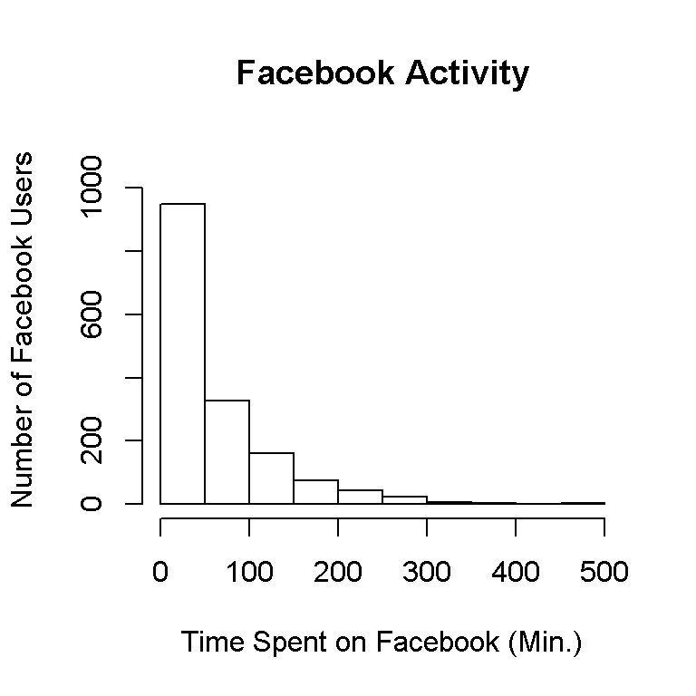
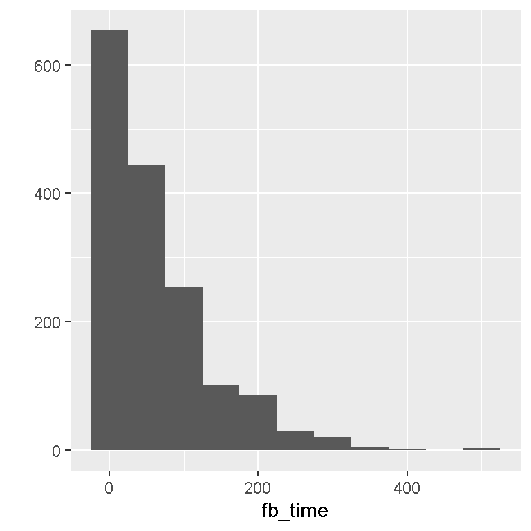
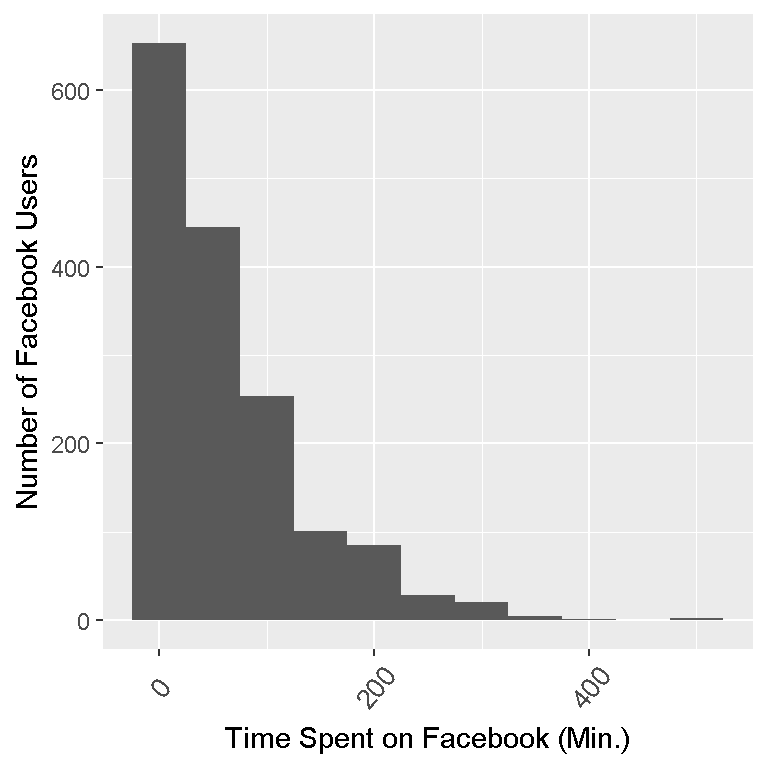
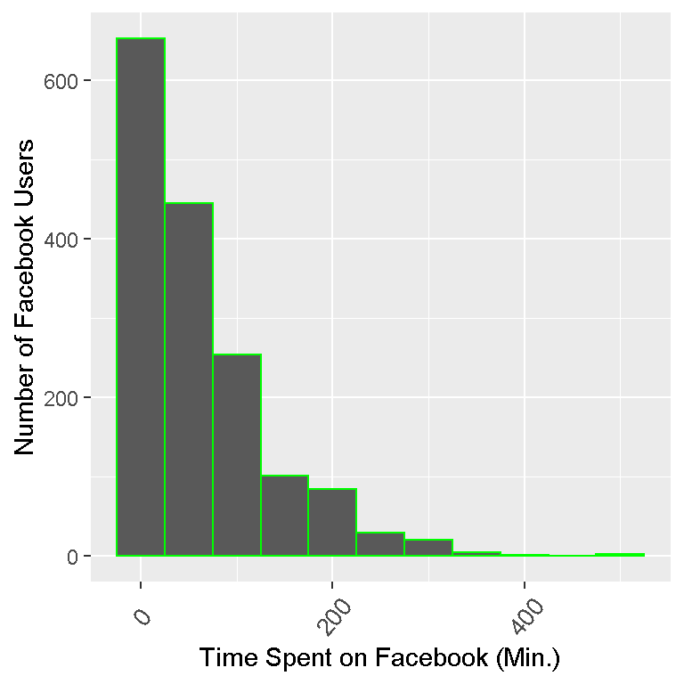
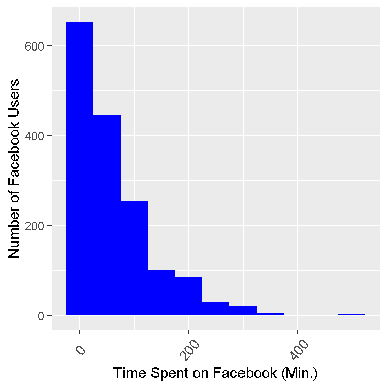
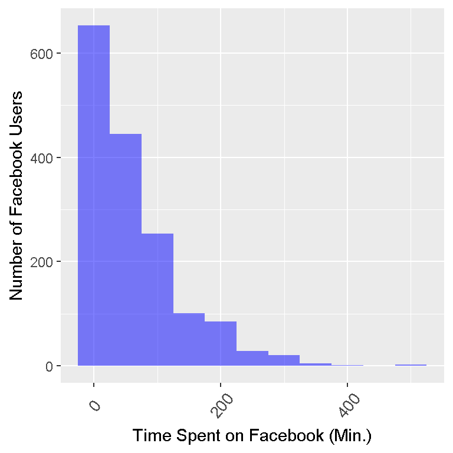

Hi there. In this post, I will highlight histograms in the statistical program R using the R base package, ggvis and the ggplot2 data visualization packages. (Note: This is a long post.)
This dataset was found from the link:
http://sites.williams.edu/bklingen/files/2015/07/timeFB.csv
It is a .csv file that can be read in Excel or a notepad program such as Notepad++. Since this is a .csv file this works well with R (Python and other programs).
There are two columns in the dataset which are class and time. There is no other information included (there was no description of the dataset found on the website). I am going to assume the times in the second column are in minutes (per week). It is unknown what FR, JU, SE and SO are under the class column of the dataset.
We will load the data into R from the web. You can also download the .csv file into a folder and have R load the file from a directory. But I think it is much easier to load files from the web (when possible).
# The url link of the dataset in .csv format:
url = 'http://sites.williams.edu/bklingen/files/2015/07/timeFB.csv'
# Load data with read.csv() function with header = TRUE
facebook_time <- read.csv(url, header = TRUE)
In the read.csv function, we put header = TRUE so that R recognizes the column titles as column titles and not as observations in the data set.
Summary Statistics
After loading the data in, we want to take a look at our data, its size dimensions and some summary statistics.
The head() function takes a look of the first six rows of the dataset. (One could use the n = argument to look at more/less rows)
The str() function gives us the structure of the dataset with information of values, variables, factors and so forth.
Summary() in R gives us summary statistics such as mean, median, counts, minimum, maximums and so forth. There is no built-in mode function in R. One can refer to a previous post here.
The R code and output for this part is as follows:
# A look at the data:
head(facebook_time)## class FBtime
## 1 FR 60
## 2 FR 0
## 3 FR 60
## 4 FR 0
## 5 FR 0
## 6 FR 0str(facebook_time)## 'data.frame': 1597 obs. of 2 variables:
## $ class : Factor w/ 4 levels "FR","JU","SE",..: 1 1 1 1 1 1 1 1 1 1 ...
## $ FBtime: num 60 0 60 0 0 0 0 30 7.5 45 ...
From the str() output we have 2 variables/columns which are class and time with 1597 observations.
Notice that the summary() function gives counts under the class variable/column as FR, JU, SE, SO are not variables.
In a sorted sequence of values/numbers from lowest to highest, the 1st Quartile is the 25th percentile, the Mode (not given) is the 50th percentile or just simply the middle number, and the 3rd quartile is the 75th percentile.
Sometimes the mean, median and mode metrics are not enough (or not understood). What if we wanted to know the amount of users from the 1597 who spend a certain amount of time on Facebook? The code and output is below.
# The times are in the second column
fb_time <- facebook_time[, 2]
# Users who spend no time on facebook:
no_fb <- sum(fb_time == 0); no_fb## [1] 336# Percentage/Proportion out of 1597 observations:
no_fb / 1597## [1] 0.2103945# Users less than 30 minutes:
less30_fb <- sum(fb_time < 30); less30_fb; less30_fb / 1597## [1] 659## [1] 0.4126487# Users from at least 30 minutes to an hour (non - inclusive):
fb_30_hour <- sum(fb_time >= 30 & fb_time < 60); fb_30_hour; fb_30_hour / 1597## [1] 301## [1] 0.1884784# At least an hour on facebook:
hourplus_fb <- sum(fb_time >= 60); hourplus_fb; hourplus_fb / 1597## [1] 637## [1] 0.3988729
The amount of users from the 1597 who spend no time on Facebook is 336 or about 21.04% of the 1597 in the sample.
The amount of users who spend less than 30 minutes on Facebook is 659 or about 41.26% of the 1597 in the sample.
The amount of users who spend at least 30 minutes but less than an hour on Facebook is 301 or about 18.85% of the 1597.
From the 1597, we have 637 or about 39.89% who spend at least an hour on Facebook.
We use the hist() function from the base package in R to produce a histogram.
# Base R Package Histogram:
hist(fb_time, xlab = "Time Spent on Facebook (Min.)", ylab = "Number of Facebook Users",
main = 'Facebook Activity', ylim = c(0, 1100))
This histogram gives us what we need but it looks bland and outdated.
We explore graphing using the ggvis package to produce a more appealing histogram.
The packages ggvis and dplyr (for the %>%, I won’t explain details) in R will be used. My code and output is below.
library(ggvis)
library(dplyr)
facebook_time %>% ggvis(~fb_time) %>% layer_histograms() %>%
add_axis("x", title = "Time Spent on Facebook (Min.)", title_offset = 50) %>%
add_axis("y", title = "Number of Facebook Users", title_offset = 50)## Guessing width = 20 # range / 24
This histogram looks much better and more polished.
After learning about the ggplot2 package in R and playing around with it for the last few weeks, I prefer to graph using this.
For a simple plot with minimal code, the qplot() in ggplot2 is nice and simple.
# ggplot2 qplot:
library(ggplot2)
qplot(fb_time, data = facebook_time, geom = "histogram", binwidth = 50)
ggplot2 Histograms
We can use more features from the ggplot2 package when it comes to data visualization. I do not want to go into details about the code. Code details can be found in the References at the bottom of this post. The code with comments and output are below.
# ggplot2 histogram plots:
ggplot(facebook_time, aes(fb_time)) + geom_histogram(binwidth = 50) +
labs(x = "Time Spent on Facebook (Min.)", y = "Number of Facebook Users") +
theme(axis.text.x=element_text(angle=50, size=10, vjust=0.5))
# Adding colour outline of the bars (col = "green"):
ggplot(facebook_time, aes(fb_time)) + geom_histogram(binwidth = 50, col = "green") +
labs(x = "Time Spent on Facebook (Min.)", y= "Number of Facebook Users") +
theme(axis.text.x=element_text(angle=50, size=10, vjust=0.5))
# Adding colour of the bars (fill = "blue"):
ggplot(facebook_time, aes(fb_time)) + geom_histogram(binwidth = 50, fill = "blue") +
labs(x = "Time Spent on Facebook (Min.)", y= "Number of Facebook Users") +
theme(axis.text.x=element_text(angle=50, size=10, vjust=0.5))
# Making the bars lighter (alpha = 0.5):
ggplot(facebook_time, aes(fb_time)) + geom_histogram(binwidth = 50, fill = "blue", alpha = 0.5) +
labs(x = "Time Spent on Facebook (Min.)", y= "Number of Facebook Users") +
theme(axis.text.x=element_text(angle=50, size=10, vjust=0.5))
With major thanks to the open source community and to those who have built great packages for R, displaying data does not have to be bland. The R packages ggvis and ggplot2 are very good for displaying histograms and data in general.
Notice that each bar represents a binwidth of 50. The first bin is from 0 to 50 minutes spent on Facebook. The data is skewed right as most of the values (or the peaks) are on the left and the tail (flat parts) of the frequency distribution is on the right.
Keep in mind that 1597 observations are in the sample. If we were to draw another 1597 observations, we may not get the exact same histogram (Frequentist statistics philosophy).
{kind=link}